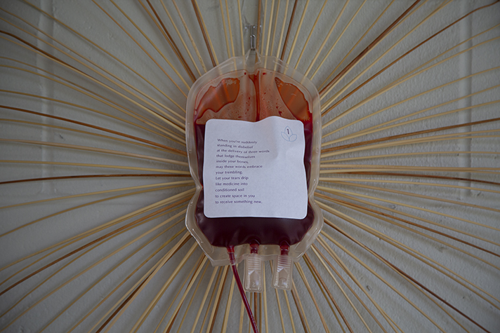
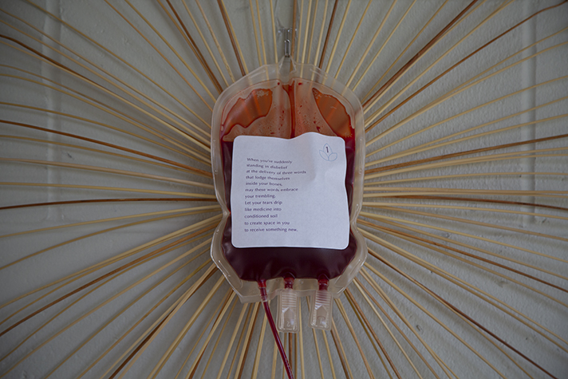
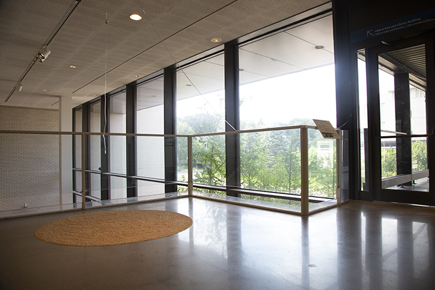
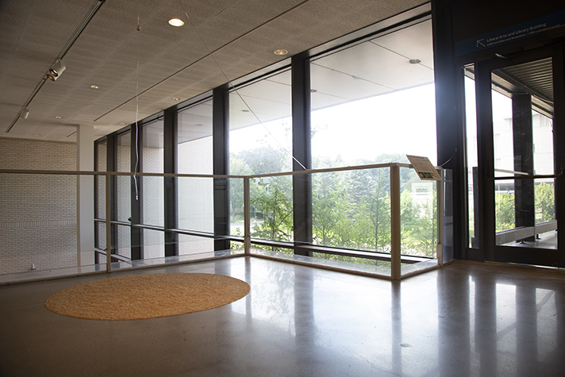

A Beautiful Example
Background
In the spring of 2015, I had the privilege to take a course during my undergraduate studies in the Wisconsin School of Business at the University of Wisconsin–Madison on beauty. This course titled Aesthetics in Business: Approaching Beauty was taught only this one semester by visiting artist and lecturer Diane Ragsdale.
The primary goal for teaching a course on beauty in the Wisconsin School of Business was to produce “wiser, more responsible leaders” with “moral imagination” to address the problems faced by the world today.40 Most of the ideas and research presented on this website come from what I learned in this class as well as what I learned in my own life after the class. Aesthetics in Business: Approaching Beauty changed my life for the better because the course provided me with clarity to answer the challenging question I had on my heart and mind at the time: ‘How does one live a meaningful life?’ The root of this question is about becoming, being, and transcendence,41 which I understand are lifelong pursuits shaped by every individual’s unique life experiences.
Shortly after graduating from the University of Wisconsin–Madison and returning home to the Twin Cities in December 2015, my mother was diagnosed with Acute Myeloid Leukemia (AML) in February 2016. In July of the same year, my mother received stem cells donated by her sister (my aunt) through a bone marrow transplant performed at the Mayo Clinic in Rochester. As a result of this transplant, my mother survived and has remained in remission since November 2016.
I am so grateful to my mother’s sister who was a perfect match and donated her stem cells for the transplant. I am also thankful for the care provided by family, friends, and the staff at Methodist Hospital in St. Louis Park and the Cancer Center at the Mayo Clinic. It is a blessing that my mom is healthy and still here.
This heart-wrenching experience confirmed for me what I had learned in Aesthetics in Business: Approaching Beauty because it dawned on me that the donation of stem cells by my mother’s sister to perform the bone marrow transplant exhibits many of the attributes that scholars define as the experience of beauty. Namely, the attributes of symmetry, a selfless mind, desire for creation,42 and the crossing of a threshold.43 My mother’s transplant experience is exemplary for how I want people to understand and think about beauty.
1. Symmetry
Human leukocyte antigens (HLAs) are proteins found in most cells in your body.44 HLA typing is a test that matches donors and recipients because a close match improves the chances that the transplant will be a success.45 My mom and her sister were a 10/10-match, matching all 10 HLA markers.46 I will also add that my mom and her sister were born 10 years apart on the same day.
2. A Selfless Mind
My aunt graciously agreed to put her life on hold and sacrifice her time to donate her stem cells to extend the life of my mom, conferring on my mom the gift of life.47 My aunt was “sidelined” because the stem cells had to be harvested from the blood drawn from her neck for several hours.48
3. Desire for Creation
After this experience, no one desired to bring children into the world, but I was awakened to my own mortality and creativity, and I had the desire to begin creating again around the time of my admittance to the Post-Baccalaureate Certificate in Graphic Design program at MCAD. I was also inspired to create this project as a result of this beautiful experience.49
4. Thresholds
My mom crossed a threshold in her life on the day of her transplant on July 18, 2016, called day zero.50 This day is also referred to as my mother’s second birthday by the staff at the Mayo Clinic. In crossing, my mom physically changed as a result of the bone marrow transplant because she is currently in the process of getting the vaccinations she had when she was a baby and she shares the same DNA as her sister now.51 Moreover, my mom changed mentally and spiritually because she has a new appreciation for her own life, the people in her life, and the world around her.52
Installation
Inspired by what I learned in Aesthetics in Business: Approaching Beauty and my mother’s transplant experience, I created a site-specific art and design installation across the skyway on the campus of the Minneapolis College of Art and Design (MCAD) as the anchoring centerpiece of this overall project of A Beautiful Threshold.
The installation is site-specific because the skyway of MCAD exhibits the project’s guiding concepts of beauty and thresholds. For example, the MCAD skyway is a crossing that connects the older Morrison Building (constructed in 1915) to the newer Main Building (constructed in 1974).53 Moreover, the skyway is an architectural feature common to medical buildings.
Also inspired by the blessings by John O’Donohue, the installation features three blood donor bags connected by IV tubing with a three-part blessing written by me. Each part of the blessing is printed onto each bag’s sticker label. The day of a patient’s bone marrow transplant is called day zero or referred to as their second birthday.54 As such, I have titled the blessing and the installation, Day Zero: A Blessing.


 



 
